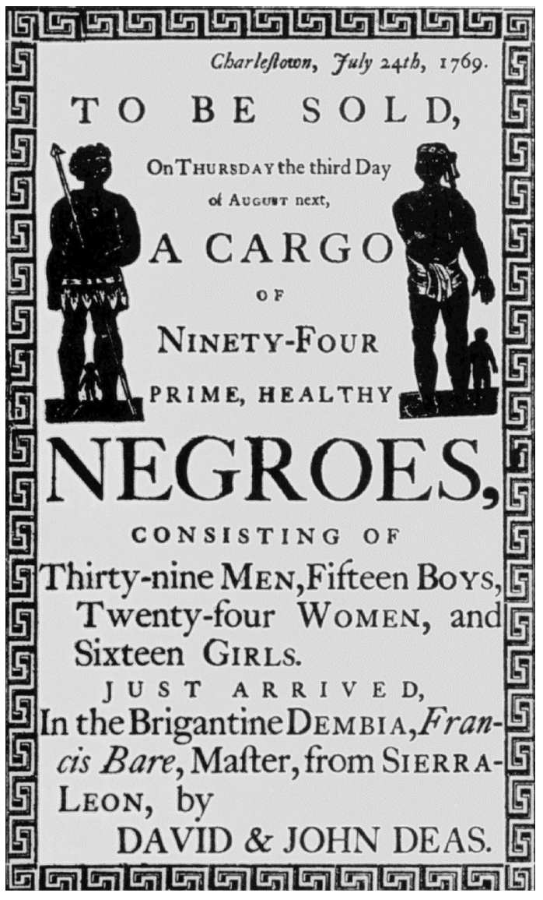

伴随种族欧化而来的是政治欧化。政治欧化有许多种形式，反映了欧洲诸宗主国原有的差别和在海外领地的不同条件。例如，拉丁美洲殖民地和英属13个殖民地通过武装革命在18世纪后期和19世纪早期赢得了政治上的独立。相比之下，英国自治领则是在19世纪后期通过英国议会的法令赢得自治的。因此，直到今天它们仍保留在英联邦内，在承认英国王权的同时享有完全的自治。
另一个政治欧化多样性的例子是13个殖民地成功统一，并且最终从大西洋扩张到太平洋，成为美利坚合众国。相形之下，拉丁美洲则经历了政治上的分裂。政治欧化多样性的最后一个例子是美国和英国自治领的政治稳定与拉丁美洲无休止的军事政变的对比。直到今天，美国一直沿用1787年的宪法，而拉丁美洲国家则平均每国已采用过10部不同的宪法。
俄克拉何马购地热
欧洲人涌入印第安人土地的一个生动的例子是1893年俄克拉何马切罗基狭长地带的开放。下面是一个叫比利·麦根提的参与者的描述。*
我已不知不觉地进入了这一地带，挑选出我想要登记的地方——坎普河岸边160英亩土地。那块地顺坡而下，非常好，可以犁出像肋骨一样平直的耕地。开垦灌木丛，可以种上足够的桃树，供应全国的水果市场。我将播下种子，收获金钱。
然后，我将为自己找一个能干的姑娘，并在这片土地上为自己生一群孩子……
赛马的那天，我比鸡起得还要早……到8点钟时，也就是开始前4小时，男人们和马匹紧挨着聚在一起，即便是闪电也不能打散他们。
男人们像狗一样互相咒骂、咆哮，因为他们都想把自己的马车插到别人前面。他们挥舞拳头打了起来，狗也咬作一团。
11点50分。还有10分钟就要天塌地陷。每分钟都像你一生中的一年一样。11点55分，但是，警戒的士兵却没有注意到我的马的前蹄已越过线2英尺多。
11点59分。当官方发令者踩在起跑线上时，这时的说话声像成群的野蜂一样嗡嗡响。他一手拿表，一手拿枪。他看了看表，举起了枪。
他向天空开了一枪。车轮转动！鞭声响亮！蹄声轰鸣！赛马开始了……
在我的周围，车轮与马鞍较量、人与人竞赛，马车撞击着马车。为了让马跑得更快，马皮都被鞭子抽得血红。驾车人站在马车上，一旦别人的马靠得太近，就用鞭子抽自己的马和别人的马……
我们一到河边，我就跳下马车，跳到我挑选的那块地上。
我抓起石头和木棍，把我的160英亩地划出来……当我放下最后一块标志物时，我从三角叶杨树上擗了一根树枝，把我的大手帕绑在上面。因为法律规定，当你占完地后，必须竖起一个类似旗子的标志。
然后，我站了起来，向第一块可以称为是自己的土地望去。我的心怦怦直跳，声音和刚刚留下的马蹄声一样响亮。
“你现在是个人物了，比尔。”我对自己说，“你有最好的马，你圈了一块最好的地。你超过了他们所有的人，真的，你将来种的地也会比他们所有人的都好。”
* Bill McGinty, “Plow Fever”，in Harold Preece, Living Pioneers（Thomas Y. Crowell，1952）, pp. 190-201.
总之，政治欧化涉及欧洲政治制度向海外领地的移植。但是，在这一移植的过程中有适应、有变化。今天，如果让一位加拿大或澳大利亚的政治领导人来领导一个美国政党，在地区利益、民族集团和大都会政治团体之间玩脆弱的平衡术，他会全然不知所措。如果让他面对拉丁美洲的政治及其接连出现的种种宪法和军事首脑，他会更加手足无措。

图235 这是一幅1769年的单面印刷的广告，说有一船西非奴隶将运到南加利福尼亚的查尔斯顿。当时，奴隶占殖民地移居者的三分之二以上；运来的奴隶男女的数量也基本上相等。这一做法最终促成了奴隶家庭和社区的形成。